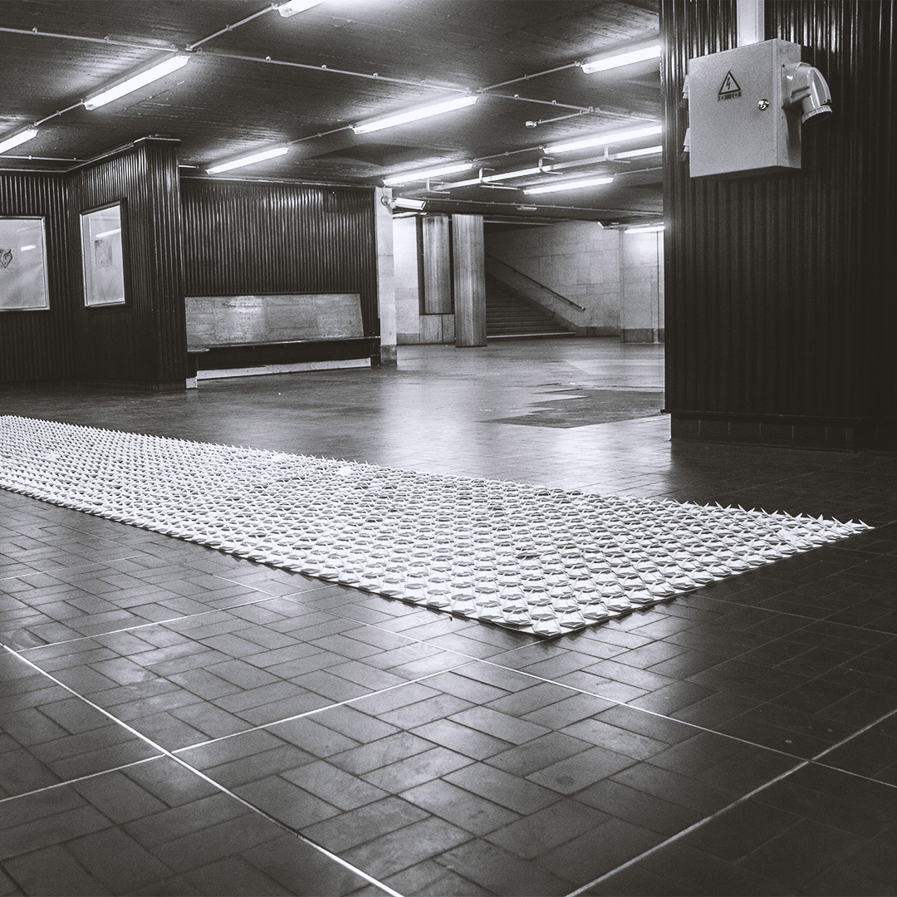
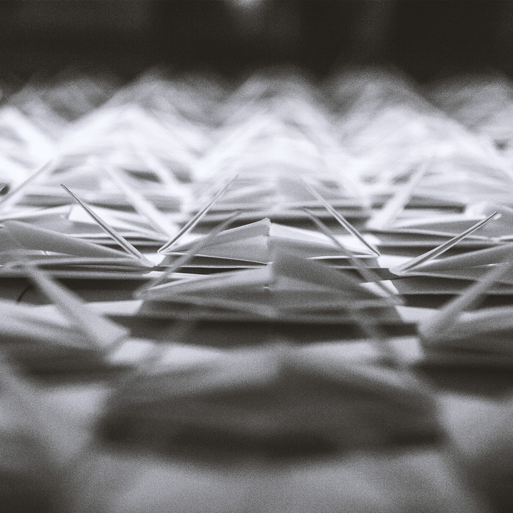
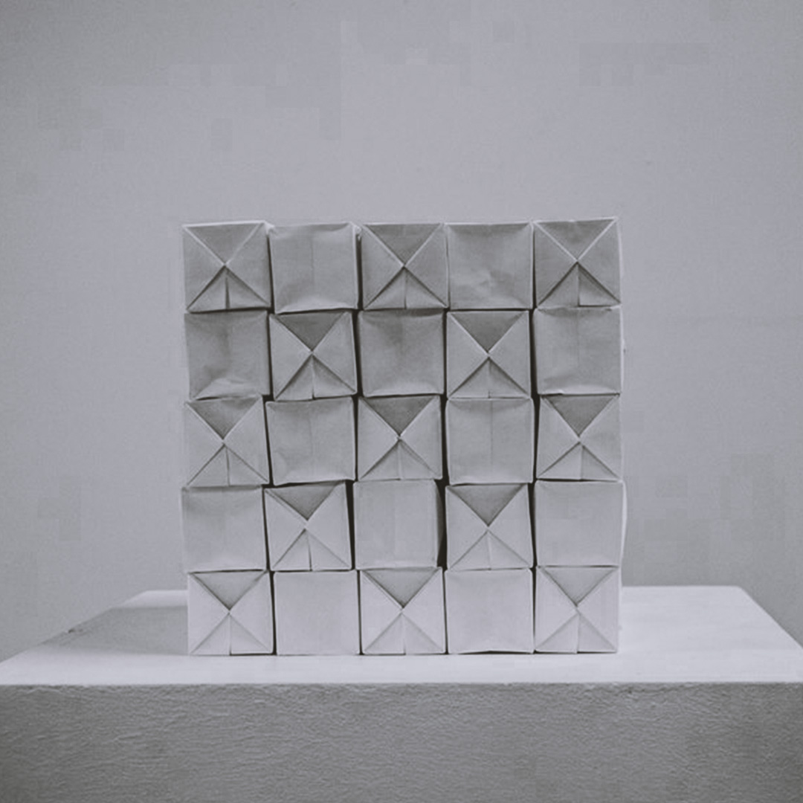
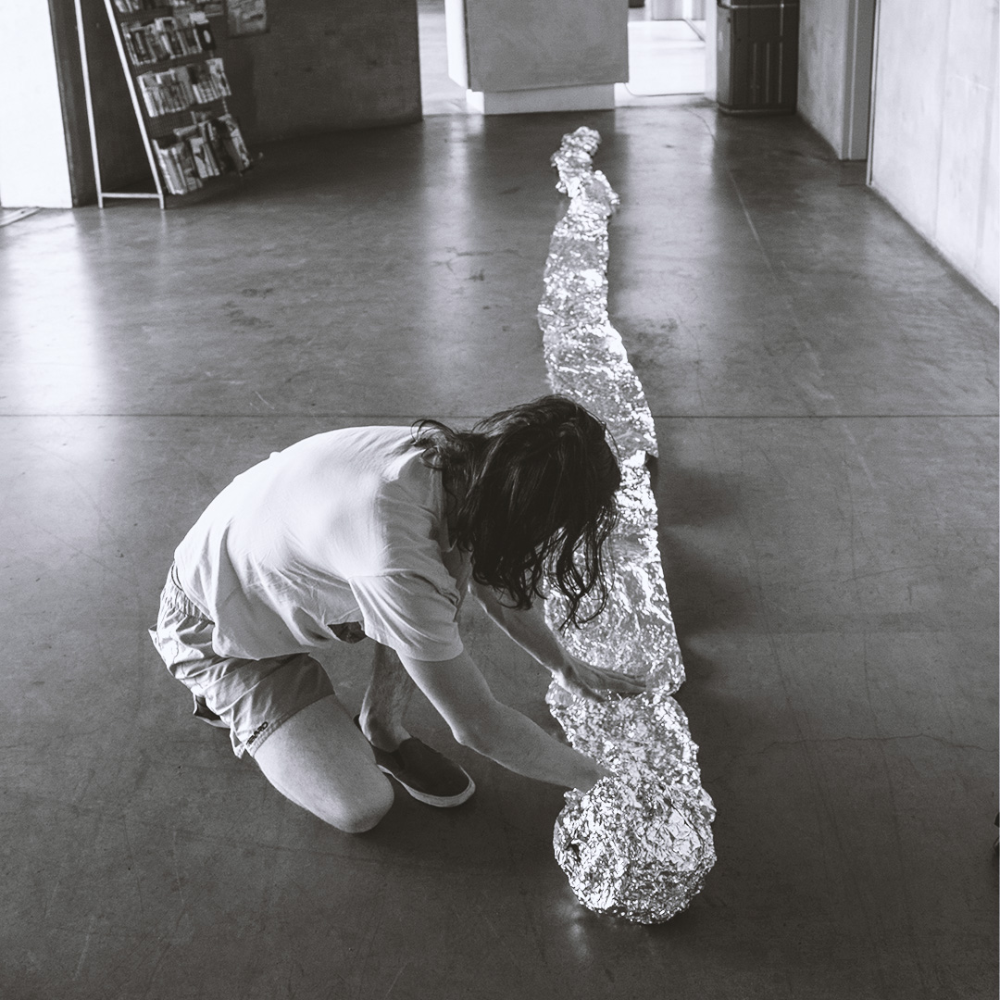
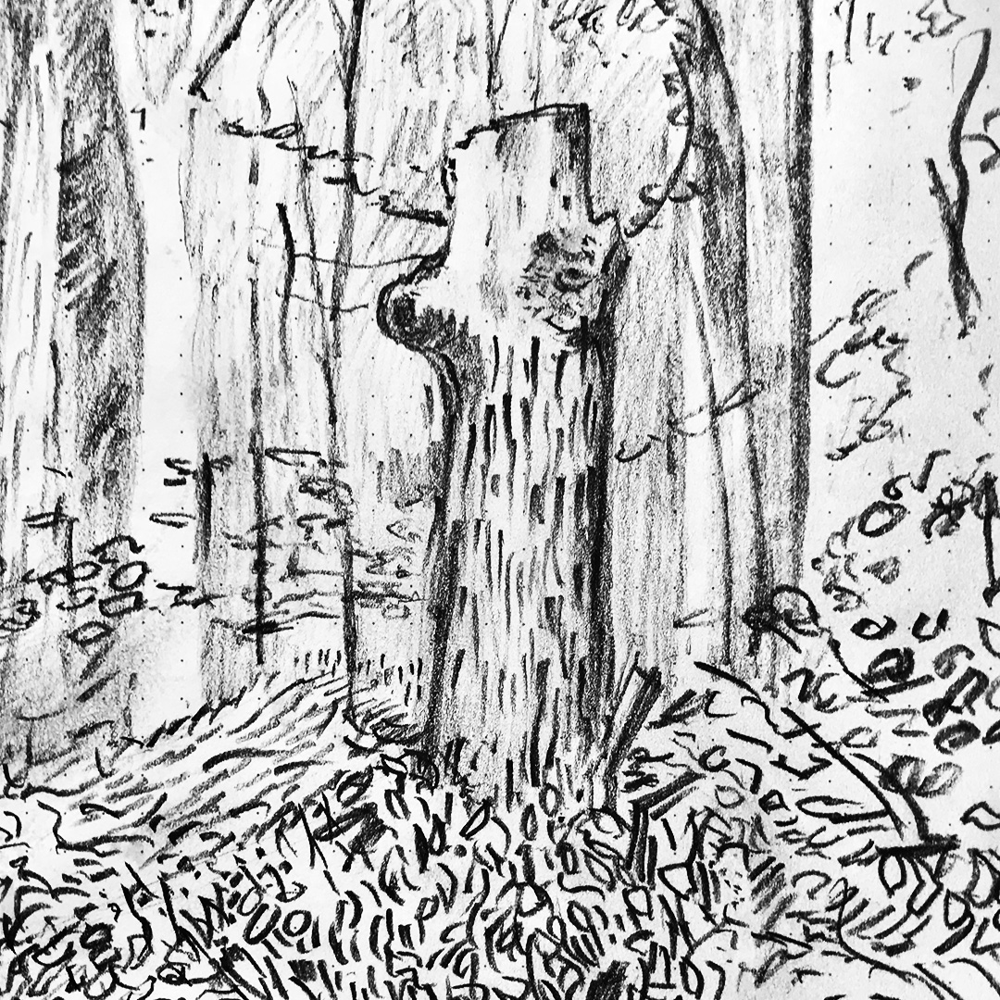
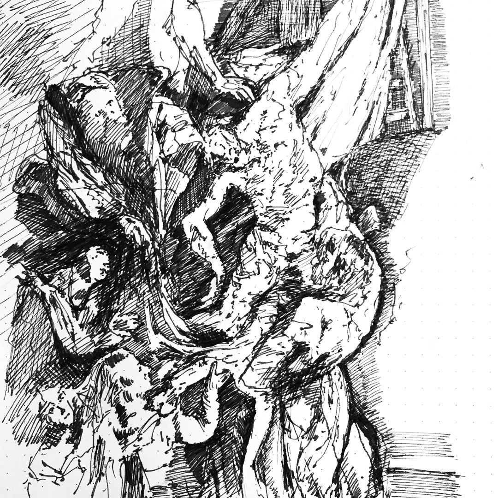
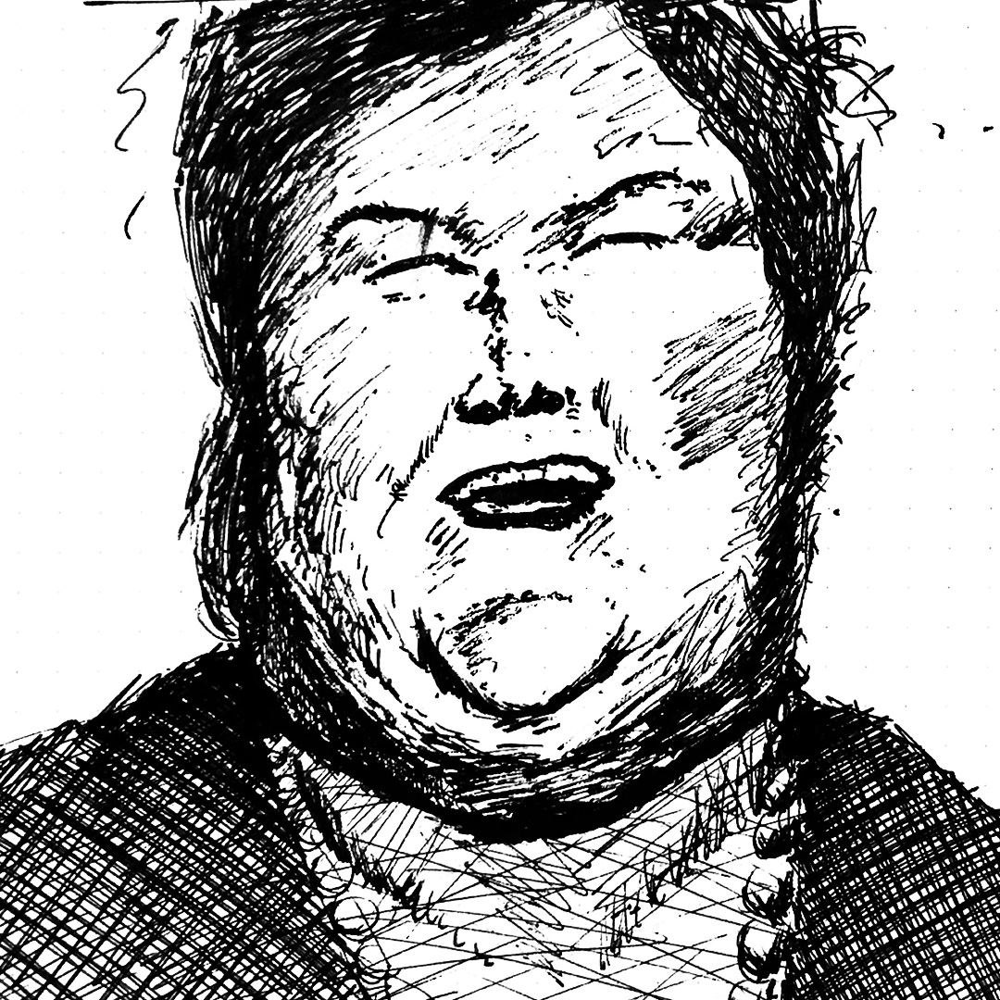
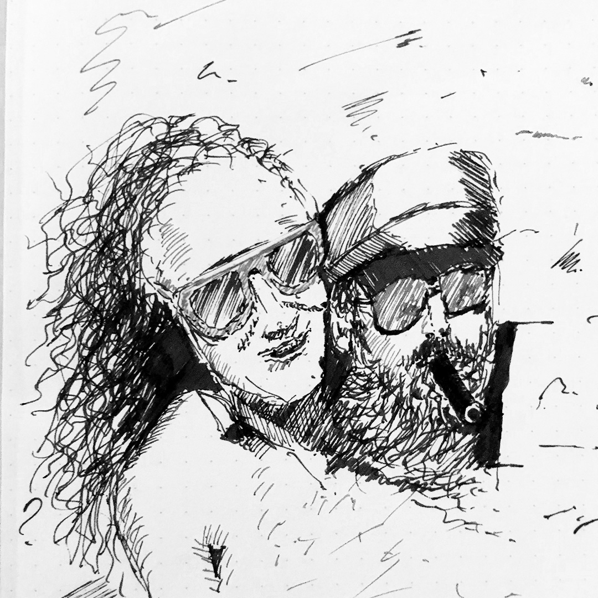

Other Works
Papierwerk
2014-2016
In de periode 2014-2016 werkte ik vaak met papier. Ik maakte werk waarin papier op een bepaalde manier werd bewerkt, door het te vouwen, op te frommelen of te scheuren. Deze werken werden gemaakt en tentoongesteld in Brussel, in deze periode studeerde ik aan St. Lucas.




Sketches
Usually made in notebooks.
Enkele snelle schetsen uit mijn notitieboekjes. Voorbeelden tonen o.a. studies naar David Hockney en P.P. Rubens, maar ook andere onzin.



